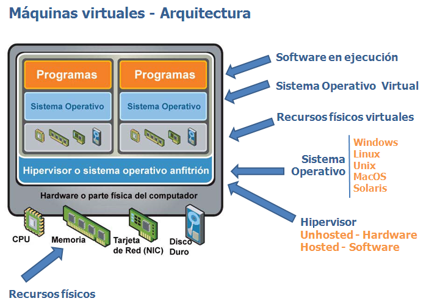
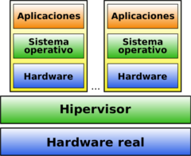
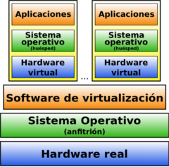
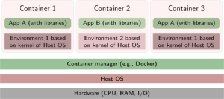

2.3. Virtualización#
El funcionamiento de los servidores hoy día no tiene nada que ver con lo que sucedía hace unos pocos años. Se ha pasado de un alojamiento en máquinas reales, las cuales incluso albergaban varios servicios, a trabajar con máquinas simuladas que ofrecen unicámente un servicio. Estas técnicas reciben el nombre de Virtualización. La virtualización de sistemas es una potente técnica de abstracción mediante la cual podemos crear una capa intermedia que se encarga de posibilitar la comunicación entre una máquina física (anfitrión o host) y el sistema o sistemas huésped (guest) virtuales.

VENTAJAS
Reducción de costes y mejor gestión de los recursos hardware. Cada máquina física puede usarse para varios propósitos a la vez, con los recursos adecuados.
Sustitución de ordenadores por un fondo de MV (pool) que puedan ser creadas, clonadas y destruidas a demanda.
Posibilidad de vender capacidad de cálculo a otras empresas (Virtual Private Servers).
Simplificación de los sistemas de copia de seguridad. Entornos para aprendizaje y pruebas. Se simplifica el montaje y experimentación de otros sistemas operativos y software distinto al que usamos habitualmente. Ideal para estudiantes.
Compatibilidad de programas. Posibilidad de usar programas que no ofrezcan versiones para nuestro sistema habitual.
Entornos controlados. Se pueden probar programas en los que no confiamos,
Fácil migración de unos ordenadores a otros.
INCONVENIENTES
Un único punto de fallo para todas las máquinas virtuales que se ejecuten en un único servidor físico. Para solucionarlo se deben utilizar servidores con un alto nivel de redundancia de discos, memoria, red, fuente de alimentación, y demás componentes (algo bastante más fácil de conseguir si trabajamos en entornos virtualizados)
Actualmente se asocia un único servicio a cada servidor, con el fin de limitar el alcance de un hipotético fallo
2.3.1. Tipos de Virtualización.#
TIPO 1: Denominada nativa/unhosted, es software que se ejecuta directamente sobre el hardware, para ofrecer la funcionalidad. El hipervisor es un SO cuya única misión es gestionar conjuntos de clusters, Máq. Virtuales, unidades de almacenamiento, etc… Un ejemplo de este tipo de virtualización lo puedes encontrar en el siguiente video, en el que muestran una instalación real de un hipervisor denominado Proxmox.

Ejemplos
Proxmox
PowerVM (IBM)
ESXi (VmWare)
Xen
OpenVZ
TIPO 2: denominada hosted o paravirtualización, es software que se ejecuta sobre un SO para ofrecer la funcionalidad(con la consiguiente penlización en rendimiento). Es la virtualización que has usado hasta ahora.

Ejemplos
Parallels (Windows/Mac/Linux)
VMware (Windows / Linux)
VirtualBox (Windows/Mac/Linux, Gratis)
QEMU(Linux, Gratis)
Windows Virtual PC (Windows, Gratis)
CONTENEDORES: Es una alternativa más de virtualización, que persigue mejorar el rendimiento y permitiendo el diseño de infraestructuras de trabajo más dinámicas. Posibilidad de aplicaciones de gestión automática(Kubernetes..)

Ejemplos
Docker
LXC/LXD
Windows servers containers
CLOUD virtualization: Virtualización en sistemas remotos, con todas la ventajas del cloud computing (Azure, AWS, GoogleCloud..)

{kind=link}
Ejemplos
Azure
Amazon Web Services.
Google Cloud
……
Puedes encontrar un interesante artículo de las diferencias entre MV y contenedor, y la evolución de estas tecnologías en los últimos años en el siguiente blog.
2.3.2. Máquinas Virtuales#
A la hora de virtualizar SO, debemos tener varios elementos y parametros de configuracion en cuenta. En concreto, utilizando VirtualBox debemos prestar especial atención a:
Requisitos del SO a virtualizar → En el apartado de Configuración de VBox (Memoria, procesador..)
Medios virtuales → Para incluir el/los discos duros necesarios para nuestro sistema, además de vinular la ISO del SO que queremos instalar.
Configuracion de red en las MV → Uno de los apdos. más importantes. Debemos tener claro los distintos tipos de red en VBox y la utilidad de cada uno. Puedes encontrar una buena aclaración en el apartado correspondiente del manual oficial de VirtualBox.
Dispositivos USB → Extension Pack (se instala en la consola de administración de VBox)
Carpetas compartidas → GuestAdditions (Se deben instalar en cada MV por separado. ¿Sabrías hacerlo en una MV sin interfaz gráfica(GUI)?). Puedes encontrar guías de como hacerlo en la web:
2.3.3. Contenedores#
Los contenedores(containers) son el siguiente paso en la evolución de la virtualización de sistemas operativos, su objetivo principal es OPTIMIZAR el uso de los recursos de la máquina anfitrión(host). Se puede entender como una virtualización a nivel de sistema operativo. Se evita la sobrecarga asociada con tener a cada huésped ejecutando un sistema operativo completamente instalado. Una desventaja de la virtualización basada en contenedores, sin embargo, es que cada invitado debe utilizar el mismo sistema operativo que utiliza el host, además de tener un menor nivel de aislamiento.

Docker
Se ha impuesto como sistema de virtualización de aplicaciones mediante contenedores. Podemos encontrar muchos tutoriales y formaciones en la web 1. Varios aspectos destacan:
Inicialmente creada para GNU/Linux. Actualmente también existe como aplicación para Windows 2010/2016/2019 Srv
Los contenedores ofrecen un mejor rendimiento que las MV.
Pueden crearse redes virtuales privadas de contenedores
El núcleo es el Docker Engine, pero existen opciones para gestionar contenedores.
Docker Machine. Para poder ejecutar docker, debemos instalarlo previamente en nuestro SO (preferiblemente una MV Linux Server, donde ya viene incluido en los repositorios por defecto), teniendo en cuenta varias cosas:
Docker autocompleta los comandos.
En caso de duda
$docker --help
Para instalar docker
#apt install docker docker.io
Para ejectuar docker sin privilegios de administración(sin sudo)
#usermod -a -G docker usuario
Estado de Docker, imágenes y contenedores:
$docker system info $docker [image|container] [ls|rm|prune|load..] [-a]
Arrancar|parar un contenedor:
$docker [container] [run|start|pause|kill|restart...]
Gestíon de las redes(doc oficial) en nuestros entornos(similar a lo que ofrecen las MV):
$docker network [ls|connect|create|rm|prune]
Administración de volúmenes(doc oficial). Es importante entender la diferencia entre Volúmenes vs Dir. Enlazado
$docker volume [create|inspect|ls|prune|rm]
Ejecución de comandos contra los contenedores.
$docker exec -it apache-2 /bin/bash $docker cp index.html apache:/opt/bitnami/apache/htdocs/index.html
Como ejemplo, un comando típico de docker, en el que publicamos el puerto 80 del contenedor en el 8080 del host, puede ser:
$docker run -d -p 8080:80 --name=XX --mount type=bind, source=dirHost, target=dirContainer DockerImg
Si quisiéramos organizar la ejecución de dos contenedores relacionados de alguna manera (por ejemplo un servidor http y un servidor de BD que trabajan en conjunto para servir una página web) tendríamos la opción de usar Docker-compose2. Previamente debemos haber instalado el paquete docker-compose.
En los contenedores en general y en Docker en particular se manejan varios conceptos que debemos conocer para aprovechar todas sus posibilidades:
Imágenes: Plantillas a partir de las cuales lanzamos los contenedores. Pueden estar en repositorios públicos o privados (creados por nosotr@s mism@s)
Contenedores: Se ejecutan a partir de las imágenes.
Volúmenes: herramienta para conseguir la persistencia de los datos en la ejecución de contenedores.
Redes: Docker permite la gestión de las redes a distintos niveles y características. Esto proporciona opciones muy útiles para crear distintos escenarios.
¿SABRÍAS?…
Instalar docker y docker-compose en una máquina virtual Ubuntu Server
Conseguir ejecutar comandos de docker sin necesidad de sudo.
Descargar la imagen Hello-world del repoitorio oficial de docker.
Listar las imágenes y contenedores existentes en tu MV, ejecutar la imagen anterior, comprobar su estado y finalmente borrar la imagen de tu MV.
Ejecutar el contenedor httpd poniéndole como nombre web y redirigiendo al puerto 8080 del host(tu MV) el puerto 80 del contenedor. Prueba el acceso a la web.
Modificar la ejecución anterior para que tu contenido web se encuentre en una carpeta real de tu MV.
Ejecutar 4 veces más el contenedor con las mismas características que el caso anterior, en cada caso a los puertos 8081..8084 y con los nombres web2..web5
Ejecutar el ejemplo de docker-compose incluido en el pie de página con éxito.
En el aula virtual del módulo puedes encontrar una sección RECURSOS con un completo manual de Docker con todos las herramientas comentadas más desarrolladas y ejemplos de utilización de las mismas.
2.3.4. Automatización#
La ORQUESTACIÓN O AUTOMATIZACIÓN de los servicios consiste en la organización de los sistemas, configuración, gestión y coordinación automatizadas de los sistemas informáticos, las aplicaciones y los servicios. Ayuda a la TI a gestionar con mayor facilidad las tareas complejas y los flujos de trabajo, ya que éstos suelen ser variables(piensa en el ejemplo de una web como Amazon en determinadas fechas del año como navidades, Black Friday…) 3. Con las herramientas que vamos a ver conseguimos cosas como:
Mejorar el funcionamiento de nuestros servicios, ya que se adaptan a las necesidades en cada momento.
Optimizamos el uso de nuestros recursos, ya que los asignamos de manera coherente.
Reducimos la presencia de errores al limitar la intervención humana.
Ahorro de costes.

Tenemos multitud de herramientas disponibles para configurar entornos de orquestación/automatización a distintos niveles:
Contenedores: Kubernetes o Docker Swarm.
En la nube(cloud computing): Cada empresa ofrece distintas herramientas, si nos fijamos en AWS, y según su propia documentación: Para obtener control completo sobre el entorno de informática, elija ejecutar los contenedores en Amazon Elastic Compute Cloud (EC2). Para los orquestadores de contenedores, puede elegir Amazon Elastic Container Service (ECS) o Amazon Elastic Kubernetes Service (EKS).
- Siguiendo el siguiente tutorial ( https://www.middlewareinventory.com) y con alguna corrección, prueba a ejecutar un primer escenario de automatización con Ansible y Vagrant en una máquina real (tu portátil o si arrancas tu SO anfitrión desde un DD externo).
- Si quieres probar tu primer CLUSTER de contenedores, puedes seguir lo indicado en https://www.campusmvp.es.
Una vez ejecutado este ejemplo, piensa las posibilidades que te ofrecen estas herramientas:
Arranque/parada en remoto de varias MV.
Configuración de las características de esas MV.
Automatización de instalaciones, comprobaciones, etc…
-
Más ayuda en: ↩
-
Ejemplo: Como levantar un entorno con varios contenedores con docker-compose ↩
-
Ejemplo: Tutoriales de RedHat ↩